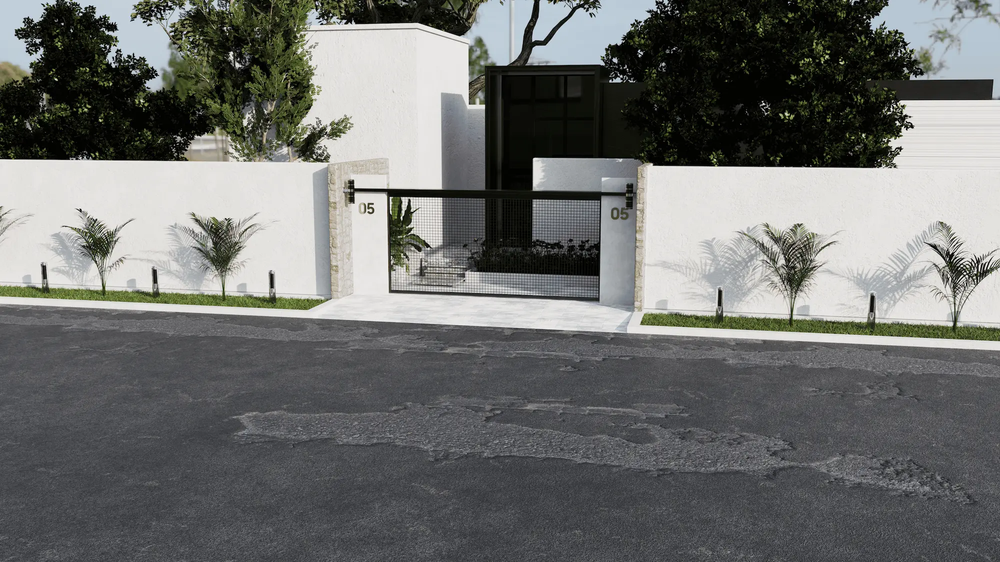
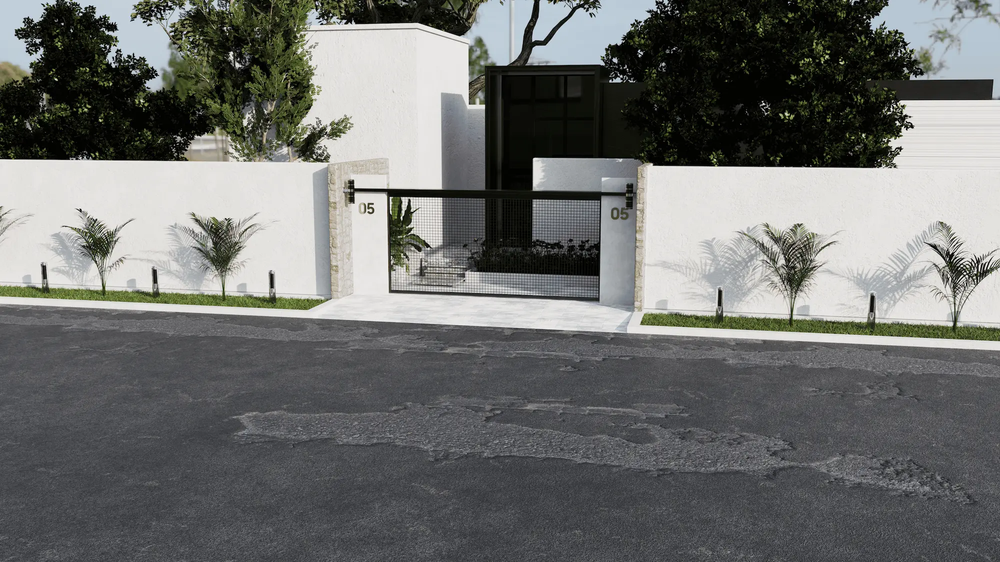
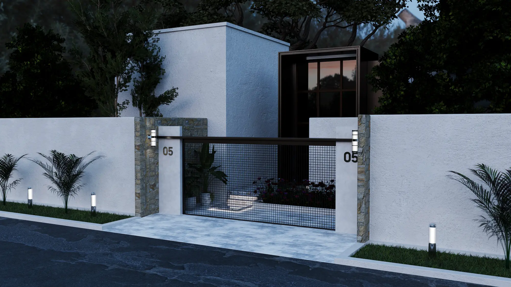
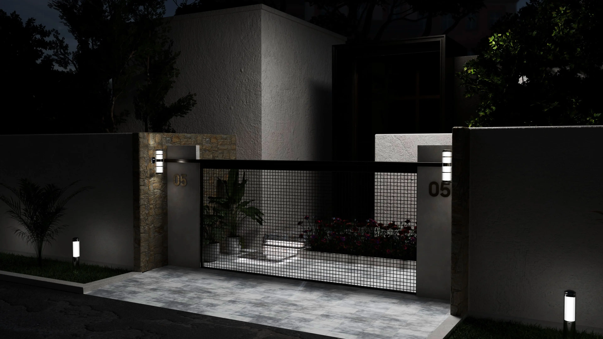
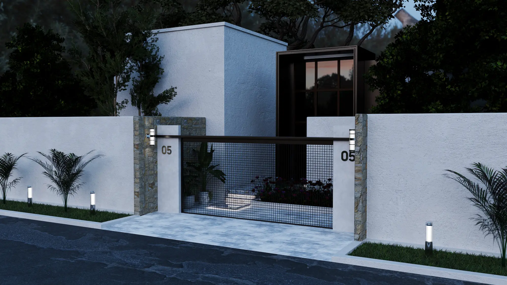
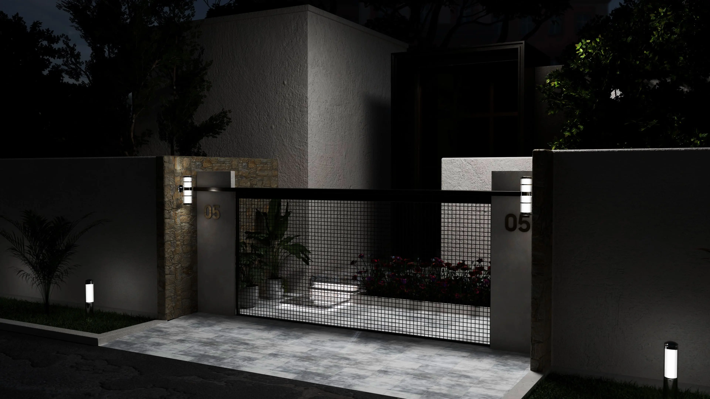

The Gate
ArchViz 3D Design
ArchViz 3D Design
This 3D architectural visualization showcases a contemporary minimalist residence designed and rendered in Blender. The design emphasizes clean geometric forms, natural textures, and a strong connection between architecture and nature.
The façade features a seamless combination of white plastered walls, stone accents, and black metal framing, creating a balanced contrast of warmth and modernity. The open-grid gate offers a glimpse of the lush courtyard garden, enhancing the visual depth and inviting atmosphere.
Strategically placed lighting and vegetation add realism and aesthetic balance, while the use of soft daylight highlights the materials’ texture and the crisp architectural lines. This visualization demonstrates a refined blend of simplicity, elegance, and modern living — a perfect example of timeless residential design in a serene urban setting.
 

 


